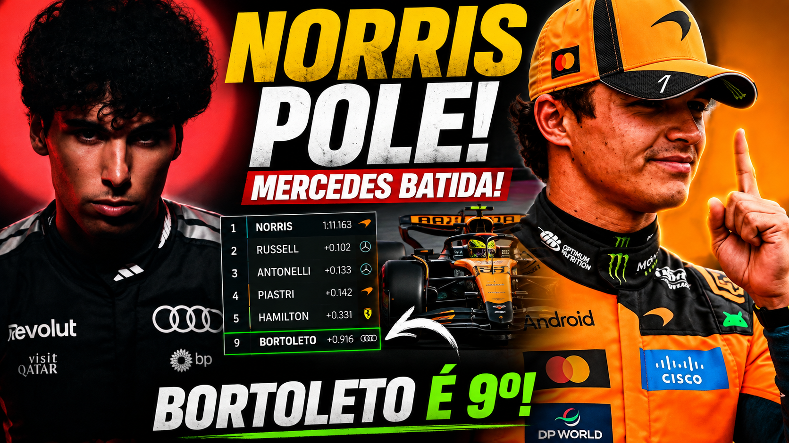

Norris supera Mercedes e faz a pole na Holanda; Bortoleto é 9º após reação impressionante

A Mercedes parecia ter o cenário ideal para largar na frente em Zandvoort. George Russell havia acabado de vencer a Sprint, mas Lando Norris respondeu no momento decisivo e conquistou a pole do GP da Holanda 2026, superando Russell por apenas 0s102. Kimi Antonelli ficou em terceiro, enquanto Oscar Piastri completou uma primeira fila praticamente colada.
Mas a classificação teve outro nome para ficar de olho: Gabriel Bortoleto. O brasileiro começou a sessão em situação complicada, avançou ao Q3 e colocou a Audi na nona posição do grid, repetindo uma sequência de performances fortes em Zandvoort. A própria Audi confirmou Bortoleto em P9 e Nico Hülkenberg em 13º.
Gostou do conteúdo? Confira nossa loja!

Norris vira o jogo contra a Mercedes
A pole de Norris ganhou ainda mais peso pelo contexto do sábado.
Poucas horas antes da classificação, Russell havia vencido a Sprint de ponta a ponta. O resultado reforçou a impressão de que a Mercedes tinha encontrado uma combinação muito competitiva para Zandvoort.
A McLaren, porém, reagiu.
Norris encontrou desempenho justamente no momento mais importante da sessão e fechou o Q3 com 1:11.163, garantindo a primeira posição. Russell ficou em 1:11.265 e Antonelli em 1:11.296.
A diferença entre os três foi mínima.
Piastri, quarto colocado, também terminou muito próximo, a somente 0s142 do companheiro de equipe. O resultado mostra que a disputa pela vitória não será simplesmente uma corrida entre Norris e Russell: a segunda McLaren e o segundo Mercedes também chegam com ritmo para interferir diretamente na briga.
A chuva aumentou a pressão no Q3
Um dos fatores que tornou a classificação ainda mais interessante foi a ameaça de chuva nos minutos finais.
Os pilotos precisaram acelerar o processo de preparação para a última tentativa, porque uma piora das condições poderia transformar completamente o grid.
No fim, a pista permaneceu competitiva o suficiente para que os pilotos completassem suas voltas rápidas, mas a ameaça climática aumentou a pressão sobre quem estava disputando a pole. Reuters destacou justamente a tensão provocada pela previsão de chuva durante a fase decisiva.
Para Norris, foi a oportunidade perfeita.
O piloto da McLaren encaixou a volta quando mais precisava e garantiu sua segunda pole consecutiva, depois da vitória na Hungria antes da pausa de verão. Além disso, a McLaren alcançou a terceira pole consecutiva em Zandvoort.
Bortoleto sobrevive ao Q1 e chega novamente ao Q3
Se Norris foi o grande vencedor da classificação, Bortoleto foi um dos destaques fora das quatro equipes da frente.
O brasileiro teve dificuldades no início da sessão e chegou a aparecer perto da zona de eliminação. A pressão aumentou especialmente no Q1, quando Bortoleto precisou melhorar na última tentativa para continuar vivo na classificação.
A resposta veio na pista.
Depois de avançar ao Q2, o piloto da Audi conseguiu extrair mais desempenho do carro e garantiu sua presença no Q3.
No fim, o tempo de 1:12.079 colocou Bortoleto em nono, atrás dos carros de McLaren, Mercedes, Ferrari e Red Bull. O brasileiro terminou à frente de Arvid Lindblad e novamente mostrou que a Audi pode incomodar equipes de meio do grid em uma pista onde a posição de largada tem peso enorme.
Por que o P9 de Bortoleto é importante?
O nono lugar pode parecer apenas mais uma posição no grid, mas o contexto aumenta a importância do resultado.
Bortoleto está conseguindo colocar a Audi em uma faixa competitiva próxima de pilotos que possuem carros considerados mais fortes. O brasileiro terminou a Sprint também em nono, o que indica que seu desempenho não ficou restrito a uma única volta de classificação.
Isso também cria uma oportunidade estratégica para a corrida.
Em Zandvoort, largar mais à frente pode ser particularmente importante porque o circuito não facilita ultrapassagens. Dessa forma, uma boa largada e uma estratégia eficiente podem permitir que Bortoleto permaneça próximo da zona de pontuação durante boa parte da prova.
Verstappen largará apenas em sétimo
Outro resultado que chama atenção é o de Max Verstappen.
O piloto da Red Bull terminou apenas em sétimo, atrás das duas McLaren, das duas Mercedes e das duas Ferrari. Liam Lawson foi oitavo, logo à frente de Bortoleto.
Verstappen ainda será um fator importante na corrida, principalmente por disputar seu último GP em casa em Zandvoort. Mas o desempenho na classificação deixa a Red Bull em uma posição menos confortável do que o esperado.
A largada será ainda mais importante para Verstappen, que terá de recuperar posições em uma pista onde ultrapassar não é uma tarefa simples.
Como ficou o grid do GP da Holanda 2026?
1. Lando Norris — McLaren — 1:11.163
2. George Russell — Mercedes — 1:11.265
3. Kimi Antonelli — Mercedes — 1:11.296
4. Oscar Piastri — McLaren — 1:11.305
5. Lewis Hamilton — Ferrari — 1:11.494
6. Charles Leclerc — Ferrari — 1:11.558
7. Max Verstappen — Red Bull — 1:11.618
8. Liam Lawson — Red Bull — 1:11.733
9. Gabriel Bortoleto — Audi — 1:12.079
10. Arvid Lindblad — Racing Bulls — 1:12.185
Norris é favorito? Ou a Mercedes ainda tem a vantagem?
A pole coloca Norris na melhor posição possível, mas não resolve automaticamente a disputa pela vitória.
A Sprint mostrou que a Mercedes tiene velocidade de corrida. Russell venceu a prova curta, enquanto Norris terminou em terceiro. A McLaren terá, portanto, de confirmar no domingo que a evolução demonstrada na classificação também funciona durante um stint longo.
É justamente essa diferença que pode decidir o GP.
Norris terá a pista livre à frente. Russell e Antonelli, porém, largam imediatamente atrás e podem pressionar desde a primeira curva.
E existe ainda Piastri, que parte em quarto com apenas 0s142 de desvantagem para o pole.
Ou seja: a classificação colocou quatro carros separados por pouco mais de um décimo.
A corrida promete transformar essa vantagem mínima em uma disputa estratégica.
FAQ — GP da Holanda 2026
Quem fez a pole do GP da Holanda 2026?
Lando Norris conquistou a pole com o tempo de 1:11.163, superando George Russell por 0s102.
Em que posição Gabriel Bortoleto larga?
Gabriel Bortoleto larga em 9º lugar com a Audi.
Quem larga ao lado de Norris?
George Russell larga em segundo, formando a primeira fila com Norris.
Max Verstappen larga em qual posição?
Verstappen parte da 7ª posição, atrás de Hamilton e Leclerc.
Quando será o GP da Holanda?
A corrida será disputada neste domingo, 23 de agosto, em Zandvoort.
Análise do Ponto de Frenagem
Norris largará com uma vantagem clara: ar limpo e a pole position.
Mas Russell já mostrou na Sprint que a Mercedes tem ritmo para pressionar a McLaren. Antonelli também está muito próximo, enquanto Piastri completa um grupo de quatro carros separados por uma margem mínima.
Bortoleto, por sua vez, terá uma missão diferente: aproveitar a nona posição, evitar perder terreno na largada e permanecer próximo dos carros à frente.
Depois de uma classificação tão equilibrada, a pergunta já não é apenas quem foi mais rápido em uma volta.
A verdadeira questão é:
quem conseguiu preparar melhor o carro para as condições que Zandvoort vai entregar durante toda a corrida?
E essa resposta só virá quando as luzes se apagarem.
Leia também no Ponto de Frenagem: